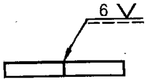
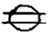
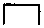
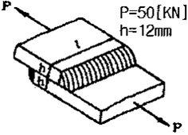
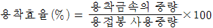
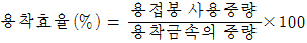
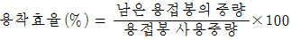
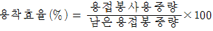

용접산업기사 (2014-03-02 기출문제)
1과목: 용접야금 및 용접설비제도
1. 금속재료를 보통 500~700℃로 가열하여 일정 시간 유지 후 서냉하는 방법으로 주조, 단조, 기계가공 및 용접 후에 잔류응력을 제거하는 풀림방법은?
- 연화 풀림
- 구상화 풀림
- 응력제거 풀림
- 항온 풀림
(정답률: 76%)

2. 용접분위기 중에서 발생하는 수소의 원(源)이 될 수 없는 것은?
- 플럭스 중의 무기물
- 고착제(물유리 등)가 포함한 수분
- 플럭스에 흡수된 수분
- 대기 중의 수분
(정답률: 70%)
3. 알루미늄의 특성이 아닌 것은?
- 전기전도도는 구리의 60% 이상이다.
- 직사광의 90% 이상을 반사할 수 있다.
- 비자성체이며 내열성이 매우 우수하다.
- 저온에서 우수한 특성을 갖고 있다.
(정답률: 56%)
4. 저소수계 용접봉의 특징을 설명한 것 중 틀린 것은 무엇인가?
- 용접금속의 수소량이 낮아 내균열성이 뛰어나다.
- 고장력강, 고탄소강 등의 용접에 적합하다.
- 아크는 안정되나 비드가 오목하게 되는 경향이 있다.
- 비드 시점에 기공이 발생되기 쉽다.
(정답률: 68%)
5. 용접성이 가장 좋은 강은?
- 0.2%C 이하의 강
- 0.3%C 강
- 0.4%C 강
- 0.5%C 강
(정답률: 89%)
6. Fe-C 상태도에서 공정반응에 의해 생성된 조직은?
- 펄라이트
- 페라이트
- 레데뷰라이트
- 솔바이트
(정답률: 51%)
7. 노치가 붙은 각 시험편을 각 온도에서 파괴하면, 어떤 온도를 경계로 하여 시험편이 급격히 취성화 되는가?
- 천이 온도
- 노치 온도
- 파괴 온도
- 취성 온도
(정답률: 65%)
8. 강의 담금질 조직 중 냉각속도에 따른 조직의 변화순서 옳게 나열된 것은?(오류 신고가 접수된 문제입니다. 반드시 정답과 해설을 확인하시기 바랍니다.)
- 트루스타이트 → 솔바이트→ 오스테나이트 → 마텐자이트
- 솔바이트 → 트루스타이트 → 오스테나이트 → 마텐자이트
- 마텐자이트 → 오스테나이트 → 솔바이트 → 트루스타이트
- 오스테나이트 → 마텐자이트 → 트루스타이트→ 솔바이트
(정답률: 67%)
9. 편석이나 기공이 적은 가장 좋은 양질의 단면을 갖는 강은 무엇인가?
- 킬드강
- 세미킬드강
- 림드강
- 세미림드강
(정답률: 77%)
10. 합금주철의 함유 성분 중 흑연화를 촉진하는 원소는 무엇인가?
- V
- Cr
- Ni
- Mo
(정답률: 53%)
11. 다음 중 서로 관련되는 부품과의 대조가 용이하여 다종 소량 생산에 쓰이는 도면은 무엇인가?
- 1품 1엽 도면
- 1품 다엽 도면
- 다품 1엽 도면
- 복사 도면
(정답률: 69%)
12. 다음 용접기호를 설명한 것으로 올바른 것은 무엇인가?

- 용접은 화살표 쪽으로 한다.
- 용접은 I형 이음으로 한다.
- 용접 목길이는 6mm 이다.
- 용접부 루트간격은 6mm 이다.
(정답률: 85%)
13. CAD 시스템의 도입효과가 아닌 것은?
- 품질향상
- 원가절감
- 납기연장
- 표준화
(정답률: 92%)
14. 도면의 분류 중 내용에 따른 분류에 해당하지 않는 것은 무엇인가?
- 기초도
- 스케치도
- 계통도
- 장치도
(정답률: 62%)
15. 3차원의 물체를 원금감을 주면서 투상선이 한 곳에 집중되게 그린 것으로 건축, 토목의 투상에 주로 사용되는 것은 무엇인가?
- 투시도
- 사투상도
- 부등각투상도
- 정투상도
(정답률: 48%)
16. 보이지 않는 부분을 표시하는데 쓰이는 선은 무엇인가?
- 외형선
- 숨은선
- 중심선
- 가상선
(정답률: 86%)
17. 용접 기호 중에서 스폿 용접을 표시하는 기호는 무엇인가?(오류 신고가 접수된 문제입니다. 반드시 정답과 해설을 확인하시기 바랍니다.)


(정답률: 72%)
18. 용접부의 비파괴시험에서 150mm씩 세 곳을 택하여 형광자분탐상시험을 지시하는 것은 무엇인가?
- MT-F150(3)
- MT-D150(3)
- MT-F3(150)
- MT-D3(150)
(정답률: 56%)
19. 도형의 표시방법 중 보조투상도의 설명으로 옳은 것은 무엇인가?
- 그림의 일부를 도시하는 것으로 충분한 경우에 그 필요 부분만을 그리는 투상도
- 대상물의 구멍, 홈 등 한 국부만의 모양을 도시하는 것으로 충분한 경우에 그 필요 부분만을 그리는 투상도
- 대상물의 일부가 어느 각도를 가지고 있기 때문에 투상면에 그 실형이 나타나지 않을 때에 그 부분을 회전해서 그리는 투상도
- 경사면부가 있는 대상물에서 그 경사면의 실형을 나타낼 필요가 있는 경우에 그리는 투상도
(정답률: 54%)
20. 겹쳐진 부재에 홀(Hole) 대신 좁고 긴 홈을 만들어 용접하는 것은 무엇인가?
- 맞대기 용접
- 필렛 용접
- 플러그 용접
- 슬롯 용접
(정답률: 77%)
2과목: 용접구조설계
21. 용접선에 직각 방향으로 수축되는 변형을 무엇이라 하는가?
- 가로수축
- 세로수축
- 회전수축
- 좌굴변형
(정답률: 58%)
22. 두꺼운 강판에 대한 용접이음 홈 설계 시는 용접자세, 이음의 종류, 변형, 용입상태, 경제성 등을 고려하여야 한다. 이 때 설계의 요령과 관계가 먼 것은?
- 용접 홈의 단면적은 가능한 작게 한다.
- 루트 반지름(r)은 가능한 작게 한다.
- 전후좌우로 용접봉을 움직일 수 있는 홈 각도가 필요하다.
- 적당한 루트간격과 루트면을 만들어준다.
(정답률: 73%)
23. 자분탐상검사의 자화방법이 아닌 것은?
- 축통전법
- 관통법
- 극간법
- 원형법
(정답률: 63%)
24. 한 끝에서 다른 쪽 끝을 향해 연속적으로 진행하는 방법으로서 용접이음이 짧은 경우나 변형, 잔류응력 등이 크게 문제되지 않을 때 이용되는 용착법은?
- 비석법
- 대칭법
- 후퇴법
- 전진법
(정답률: 71%)
25. 연강판의 맞대기 용접이음시 굽힘 변형방지법이 아닌 것은 무엇인가?
- 이음부에 미리 역변형을 주는 방법
- 특수 해머로 두들겨서 변형하는 방법
- 지그(jig)로 정반에 고정하는 방법
- 스트롱 백(strong back)에 의한 구속 방법
(정답률: 65%)
26. 연강을 용접 이음할 때 인장강도가 21 N/mm2, 허용응력 7 N/mm2이다. 정하중에서 구조물을 설계할 경우 안전율은 얼마인가?
- 1
- 2
- 3
- 4
(정답률: 83%)
27. 다음 중 용접이음의 설계로 가장 좋은 것은?
- 용착 금속량이 많게 되도록 한다.
- 용접선이 한 곳에 집중되도록 한다.
- 잔류응력이 적게 되도록 한다.
- 부분 용입이 되도록 한다.
(정답률: 80%)
28. 용접 결함 중 언더컷이 발생했을 때 보수 방법은?
- 예열한다.
- 후열한다.
- 언더컷 부분을 연삭한다.
- 언더컷 부분을 가는 용접봉으로 용접 후 연삭한다.
(정답률: 86%)
29. 저온취성 파괴에 미치는 요인과 가장 관계가 먼 것은 무엇인가?
- 온도의 저하
- 인장 잔류 응력
- 예리한 노치
- 강재의 고온 특성
(정답률: 64%)
30. 공업용 가스의 종류와 그 용기의 색상이 잘못 연결된 것은 무엇인가?
- 산소-녹색
- 아세틸렌-황색
- 아르곤-회색
- 수소-청색
(정답률: 83%)
31. 용접 구조물을 조립할 때 용접자세를 원활하게 하기 위해 사용되는 것은 무엇인가?
- 용접게이지
- 제관용 정반
- 용접지그(jig)
- 수평바이스
(정답률: 87%)
32. 아크 전류가 300A, 아크 전압이 25V, 용접속도가 20cm/min 인 경우 발생되는 용접 입열은?
- 20000 J/cm
- 22500 J/cm
- 25500 J/cm
- 30000 J/cm
(정답률: 66%)
33. 루트 균열에 대한 설명으로 가장 거리가 먼 것은 무엇인가?
- 루트 균열의 원인은 열영향부 조직의 경화성이다.
- 맞대기 용접이음의 가접에서 발생하기 쉬우며 가로 균열의 일종이다.
- 루트 균열을 방지하기 위해 건조된 용접봉을 사용한다.
- 방지책으로는 수소량이 적은 용접, 건조된 용접봉을 사용한다.
(정답률: 65%)
34. [그림]과 같은 겹치기 이음의 필릿 용접을 하려고 한다. 허용응력을 50[MPa]라 하고, 인장하중을 50[KN], 판 두께 12mm라고 할 때, 용접 유효길이는 약 몇 mm 인가?

- 83
- 73
- 69
- 59
(정답률: 34%)
35. 용접시 발생하는 용접변형의 주 발생 원인으로 가장 적합한 것은?
- 용착금속부의 취성에 의한 변형
- 용접이음부의 결함 발생으로 인한 변형
- 용착금속부의 수축과 팽창으로 인한 변형
- 용착금속부의 경화로 인한 변형
(정답률: 80%)
36. 용착금속에서 기공의 결함을 찾아내는데 가장 좋은 비파괴검사법은?
- 누설검사
- 자기탐상검사
- 침투탐상검사
- 방사선투과시험
(정답률: 81%)
37. 용접부의 부식에 대한 설명으로 틀린 것은 무엇인가?
- 입계부식의 용접열영향부의 오스테나이트입계에 Cr 탄화물이 석출될 때 발생한다.
- 용접부의 부식은 전면부식과 국부부식으로 분류한다.
- 틈새부식은 틈 사이의 부식을 말한다.
- 용접부의 잔류응력은 부식과 관계과 관계 없다.
(정답률: 86%)
38. 용접시 용접자세를 좋게하기 위해 정반 자체가 회전하도록 한 것은 무엇인가?
- 메니퓰레이터
- 용접 고정구(fixture)
- 용접대(base die)
- 용접 포지셔너(positioner)
(정답률: 82%)
39. 용접구조 설계시 주의 사항에 대한 설명으로 틀린 것은 무엇인가?
- 용접치수는 강도상 필요 이상 크게 하지 않는다.
- 용접이음의 집중, 교차를 피한다.
- 판면에 직각방향으로 인장하중이 작용할 경우 판의 압연방향에 주의한다.
- 후판을 용접할 경우 용입이 낮은 용접법을 이용하여 층수를 줄인다.
(정답률: 81%)
40. 용착효율을 구하는 식으로 옳은 것은 무엇인가?




(정답률: 62%)
3과목: 용접일반 및 안전관리
41. 교류 아크 용접시 아크시간이 6분이고, 휴식시간이 4분일 때 사용율은 얼마인가?
- 40%
- 50%
- 60%
- 70%
(정답률: 86%)
42. 용접에 관한 안전 사항으로 틀린 것은 무엇인가?
- TIG 용접시 차광렌즈는 12~13번을 사용한다.
- MIG 용접시 피복 아크 용접보다 1[m]가 넘는 거리에서도 공기 중의 산소를 오존(O3)으로 바꿀 수 있다.
- 전류가 인체에 미치는 영향에서 50mA는 위험을 수반하지 않는다.
- 아크로 인한 염증을 일으켰을 경우 붕산수(2%수용액)로 눈을 닦는다.
(정답률: 76%)
43. 교류 아크 용접기에서 2차측의 무부하 전압은 약 몇 V가 되는가?
- 40~60V
- 70~80V
- 80~100V
- 100~120V
(정답률: 62%)
44. 직류 아크 용접기를 교류 아크용접기와 비교했을 때 틀린 것은 무엇인가?
- 비피복용접봉 사용이 가능하다.
- 전격의 위험이 크다.
- 역률이 양호하다.
- 유지보수가 어렵다.
(정답률: 62%)
45. TIG 용접으로 AI을 용접할 때 가장 적합한 용접전원은 무엇인가?
- DC SP
- DC RP
- AC HF
- AC RP
(정답률: 70%)
46. 두께가 12.7mm인 강판을 가스 절단하려 할 때 표준드래그의 길이는 2.4mm이다. 이 때 드래그는 몇 % 인가?
- 18.9
- 32.1
- 42.9
- 52.4
(정답률: 62%)
47. 이산화탄소 아크 용접에 대한 설명으로 옳지 않은 것은 무엇인가?
- 아크 시간을 길게할 수 있다.
- 가시(可視)아크이므로 시공시 편리하다.
- 용접입열이 크고, 요융속도가 빠르며 용입이 깊다.
- 바람의 영향을 받지 않으므로 방풍장치가 필요 없다.
(정답률: 89%)
48. 아크 용접과 절단 작업에서 발생하는 복사에너지 중 백내장을 일으키고, 맨살에 화상에 입힐 수 있는 것은?
- 적외선
- 가시광선
- 자외선
- X선
(정답률: 59%)
49. TIG용접시 교류용접기에 고주파 전류를 사용할 때의 특징이 아닌 것은?
- 아크는 전극을 모재로 접촉시키지 않아도 발생한다.
- 전극의 수명이 길다.
- 일정 지름의 전극에 대해 광범위한 전류의 사용이 가능하다.
- 아크가 길어지면 끊어진다.
(정답률: 70%)
50. CO2 아크 용접에 대한 설명 중 틀린 것은 무엇인가?
- 전류 밀도가 높아 용입이 깊고, 용접속도를 빠르게 할 수 있다.
- 용접장치, 용접전원 등 장치로서는 MIG용접과 같은 점이 많다.
- CO2 아크 용접에서는 탈산제로서 Mn 및 Si를 포함한 용접와이어를 사용한다.
- CO2 아크 용접에서는 차폐가스로 CO2에 소량의 수소를 혼합한 것을 사용한다.
(정답률: 74%)
51. 전기저항열을 이용한 용접법은 무엇인가?
- 일렉트로슬래그 용접
- 잠호 용접
- 초음파 용접
- 원자수소용접
(정답률: 77%)
52. 판두께가 가장 두꺼운 경우에 적당한 용접방법은?
- 원자수소 용접
- CO2 가스 용접
- 서브머지드 용접(Submerged welding)
- 일렉트로슬래그 용접(electro slag welding)
(정답률: 72%)
53. 용제없이 가스용접을 할 수 있는 재질은?
- 연강
- 주철
- 알루미늄
- 황동
(정답률: 74%)
54. CO2 가스에 O2(산소)를 첨가한 효과가 아닌 것은 무엇인가?
- 슬래그 생성량이 많아져 비드 외관이 개선된다.
- 용입이 낮아 박판 용접에 유리하다.
- 용융지의 온도가 상승된다.
- 비금속개재물의 응집으로 용착강이 청결해진다.
(정답률: 57%)
55. 다음 중 전격의 위험성이 가장 적은 것은 무엇인가?
- 케이블의 피복이 파괴되어 절연이 나쁠 때
- 무부하 전압이 낮은 용접기를 사용할 때
- 땀을 흘리면서 전기용접을 할 때
- 젖은 몸에 홀더 등이 닿았을 때
(정답률: 91%)
56. 강을 가스 절단할 때 쉽게 절단할 수 있는 탄소함유량은 얼마인가?
- 6.68%C 이하
- 4.3%C 이하
- 2.11%C 이하
- 0.25%C 이하
(정답률: 76%)
57. 최소에너지 손실속도로 변화되는 절단팁의 노즐 형태는?
- 스트레이트 노즐
- 다이버전트 노즐
- 원형 노즐
- 직선형 노즐
(정답률: 68%)
58. 아세틸렌 청정기는 어느 위치에 설치함이 좋은가?
- 발생기의 출구
- 안전기 다음
- 압력 조정기 다음
- 토오치 바로 앞
(정답률: 73%)
59. 맞대기 압접의 분류에 속하지 않는 것은 무엇인가?
- 플래시 맞대기 용점
- 방전충격 용접
- 업셋 맞대기 요점
- 심 용접
(정답률: 52%)
60. B형 가스용접 토치의 팁번호 250을 바르게 설명한 것은?(단, 불꽃은 중성불꽃일 때)
- 판두께 250[mm]까지 용접한다.
- 1시간에 250[L]의 아세틸렌가스를 소비하는 것이다.
- 1시간에 250[L]의 산소가스를 소비하는 것이다.
- 1시간에 250[cm]까지 용접한다.
(정답률: 81%)